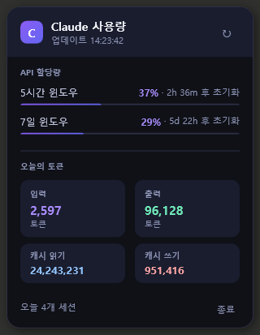

Windows 시스템 트레이에서 Claude AI 사용량을
실시간으로 모니터링하세요. 가볍고, 빠르고, 설치 없이.
Windows 10+ · .NET 런타임 불필요 · MIT License 모든 릴리즈 보기 →

Features
5시간 · 7일 롤링 윈도우 진행 바와 정확한 초기화 시각을 한눈에.
50% · 75% · 90% · 100% 도달 시 Windows Toast 알림. ntfy.sh로 스마트폰 푸시도 지원.
GitHub Releases를 감지해 배너 한 번 클릭으로 새 버전을 자동 교체·재시작.
한국어 · 中文 · 日本語 · English — 시스템 언어를 자동 감지해 표시.
.exe 하나로 끝. .NET 런타임 설치 불필요. 윈도우 시작 시 자동 실행도 지원.
Claude Code가 저장한 OAuth 토큰을 자동으로 재사용. 추가 인증 불필요.
How to install
Releases 페이지에서 ClaudeUsageTray.exe 다운로드
Windows Defender 경고 시 → 추가 정보 → 실행 클릭
시스템 트레이에 C 아이콘이 나타나면 클릭해서 사용량 확인